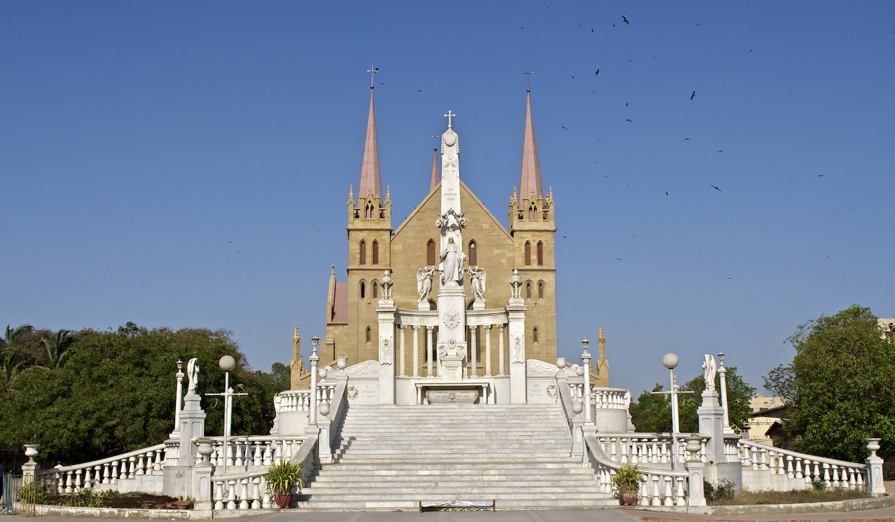

<div class="portfolio-single-load clearfix">
    <div class="custom-full-width-box">
        <div class="custom-container">
            <div class="custom-row align-items-center">
                <div class="custom-image-column">
                    
                </div>
                <div class="custom-text-column">
                    <h2 class="custom-heading">St. Patrick's Cathedral</h2>
                    <p class="custom-paragraph">
                        As the seat of the Roman Catholic Archdiocese of Karachi, St. Patrick's Cathedral stands as a testament to Karachi's diverse religious heritage. Completed in 1881, this majestic Gothic-style cathedral features soaring spires, intricate stained glass windows, and ornate interiors adorned with religious iconography. A symbol of faith and community, the cathedral welcomes worshippers and visitors from all walks of life to experience its timeless beauty and spiritual solace.
                    </p>
                </div>
            </div>
        </div>
    </div><!-- .custom-full-width-box end -->

</div><!-- end single-project -->
